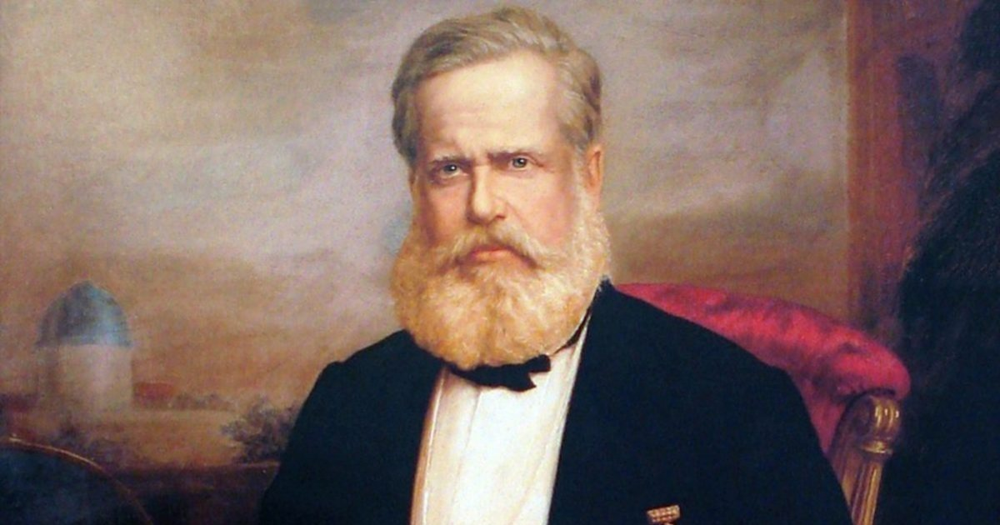
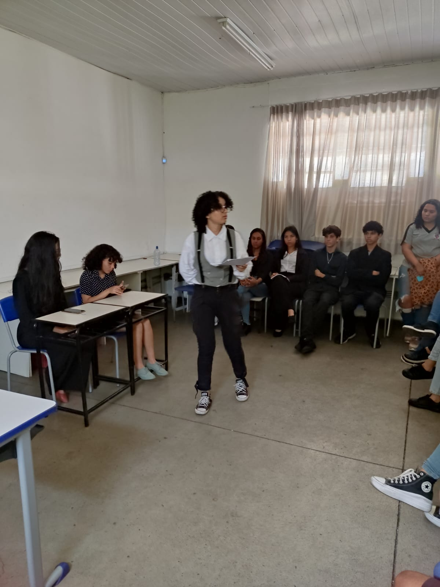

Na data 31/08/2023 foi realizado um Juri-Simulado, Organizado pelos Ivana, Marcus e Uiara. O caso de Dom Pedro II foi debatido entre as turmas 204 vs 307.
Quem foi Dom Pedro II
Dom Pedro II (ou Pedro II do Brasil) foi o segundo e último Imperador do Brasil. Ele subiu ao trono em 1840 e esteve a frente do país até 1889, quando ocorreu o golpe que instalou a República. Seguindo as tradições portuguesas e reais, o herdeiro do trono recebeu vários nomes a fim de homenagear seus avós, santos e anjos. Seu nome completo era: Pedro de Alcântara João Carlos Leopoldo Salvador Bibiano Francisco Xavier de Paula Leocádio Miguel Gabriel Rafael Gonzaga de Bragança e Bourbon.
O JULGAMENTO
Tribunal de Justiça Decreta a Absolvição de Dom Pedro II Após Julgamento Histórico Belo Horizonte, 31/08/2023 - Em um acontecimento que marcará os anais da história, o ex-monarca do Brasil, Dom Pedro II, foi submetido a um julgamento histórico no Tribunal de Justiça da nação. As acusações contra ele, relacionadas a alegadas irregularidades durante seu reinado, levaram à expectativa de um veredicto condenatório, porém, os advogados de defesa conseguiram reverter a situação, conquistando uma vitória que surpreendeu a todos. O julgamento, que durou semanas, foi cercado de tensão e antecipação. As acusações contra Dom Pedro II incluíam má administração de recursos do Estado, negligência em relação às classes mais desfavorecidas e violações de direitos humanos. Embora a nação estivesse dividida sobre a culpabilidade do ex-monarca, muitos acreditavam que as evidências disponíveis eram insuficientes para sustentar uma condenação.
A equipe de advogados de defesa(307), liderada pelo renomado jurista Dr. Clóvis Gabriel , apresentou argumentos sólidos e convincentes que questionaram a validade das acusações. Eles ressaltaram os desafios enfrentados por Dom Pedro II durante seu reinado, incluindo questões econômicas complexas e as pressões políticas da época. Os advogados argumentaram que, dadas as circunstâncias, o ex-monarca tomou decisões que ele considerava serem as melhores para o país naquele momento. Além disso, a defesa apontou para várias realizações significativas do reinado de Dom Pedro II, como o incentivo à educação, o estímulo à cultura e o desenvolvimento de infraestruturas importantes para o crescimento do país. Eles também destacaram depoimentos de pessoas que testemunharam a preocupação genuína de Dom Pedro II com o bem-estar de seus súditos.
Os promotores(204), por outro lado, lutaram para apresentar evidências sólidas que comprovassem as acusações contra o ex-monarca. As informações disponíveis muitas vezes eram vagas e careciam de contexto histórico. Isso levantou dúvidas sobre a validade das acusações e a capacidade de ligá-las diretamente a Dom Pedro II.
Após intensos debates e análises minuciosas das provas e argumentos apresentados, o tribunal finalmente anunciou sua decisão. Por unanimidade, os jurados declararam a absolvição de Dom Pedro II. A decisão foi baseada na falta de evidências suficientes para provar as acusações e na compreensão das complexidades enfrentadas pelo ex-monarca durante seu reinado. A absolvição de Dom Pedro II foi recebida com reações mistas em todo o país. Enquanto muitos comemoraram a decisão como uma vitória da justiça e do entendimento histórico, outros expressaram decepção, argumentando que a decisão poderia abrir um precedente perigoso em relação à responsabilidade dos líderes por suas ações. Independentemente das opiniões divergentes, o julgamento de Dom Pedro II permanecerá como um marco na história do Brasil. Ele levanta questões sobre o papel da liderança em momentos desafiadores, bem como sobre como o contexto histórico pode influenciar as decisões tomadas por aqueles que estão no poder.